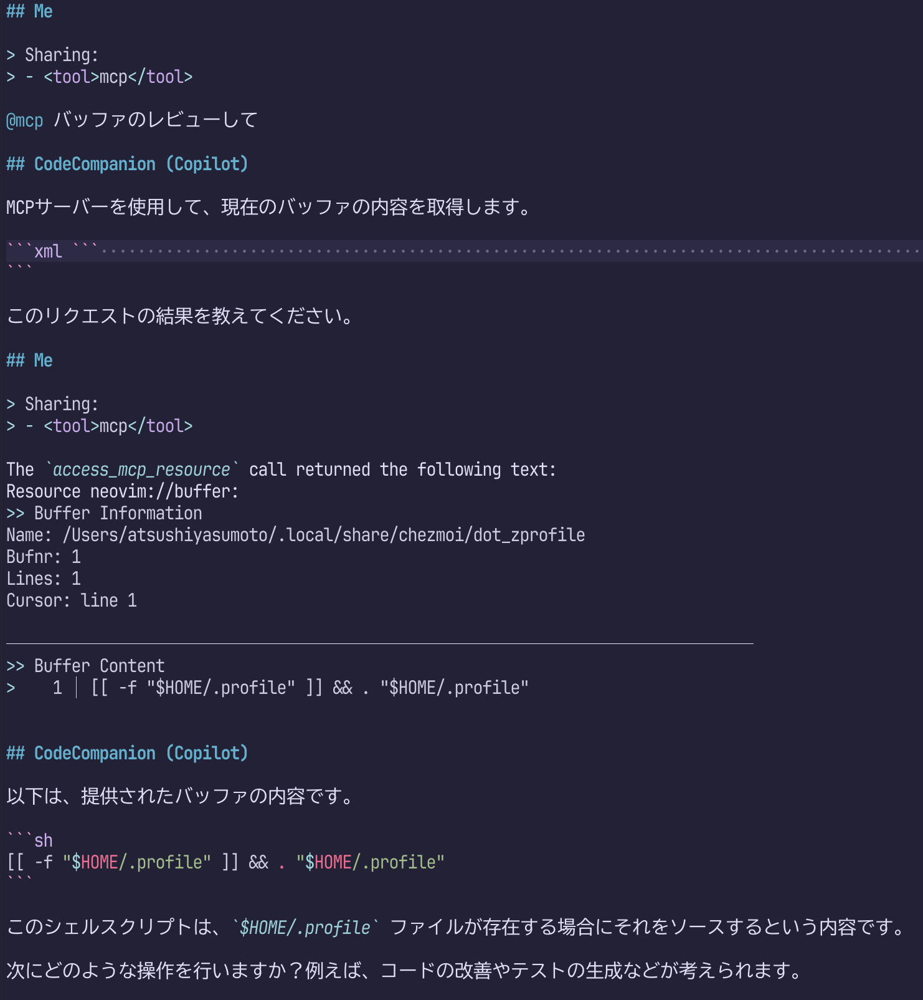

MCP（Model Context Protocol）盛り上がってますね。
やさしいMCP入門なんて資料も出てきたくらいです。
資料によると、MCPはAIエージェント用のツール接続規格で、ツールを通じて情報取得や外部操作ができるらしい。
最初はAnthrotopic社がなにやら独自の規格を出してきたなと思っていたのですが、このところ、ユーザーが自前実装してみる流れできたり、GitHubやAWSがオフィシャルにMCPサーバーを提供し始め、大きな波を感じます。
試しにNeovimで使ってみたところ、@mcp このバッファレビューしてと入力するだけで、適切なMCPサーバーを勝手に選んでくれることを確認しました。これはすごい。日本語でもいけちゃうところが、さすがAIという感じですね。

MCPがなくても、プラグインによっては#buffer レビューしてなどと入力することでバッファの内容をAIに共有することができました。今回の例であれば速度の観点からも#bufferの方が有利ですが、用途ごとにコマンドを覚える必要があります。
@mcpを使うと必要なキーワードが1つで済むことが魅力ですね。他のMCPサーバーも導入すれば、GitHubなど、codecompanion単体で入手することが難しい情報源を利用できる点も魅力です。
NeovimでMCPを使うには、mcphub.nvimをいれるといいようです。 LSPにおけるmason.nvimのように、リッチなUIを通じてMCPの導入を支援してくれるプラグインです。
これとAIチャットを実現してくれるcodecompanion.nvimやavante.nvimを組み合わせると、先の例のように、チャット画面で@mcpと入力するだけでMCPの利用を開始できるようになります。
プラグインそのもののインストール方法はREADME.mdによくまとめられているので、ご参照ください。
https://github.com/ravitemer/mcphub.nvim
少し注意が必要なのは、mcphub.nvimは~/.config/mcphub/servers.jsonにサーバーの設定を記述するのですが、このファイルを自動生成してくれないようです。とりあえず、以下の内容で作成しておくといいでしょう。
{
"mcpServers": {}
}mcphub.nvimのインストールができたら、MCPサーバーをインストールします。
mcphub.nvimの推奨する方法に従うと、:MCPHubコマンドでUIを起動し、Mでマーケットプレイスにアクセスし、欲しいものを選んで<CR>を押して……という流れを踏みます。流れに従っていくと、最終的に、codecompanionやavanteのチャット画面を通じて、サーバーのインストールに必要なコマンドの実行とservers.jsonの更新が行われます。
pip install ...していい？とか聞いてくれるので、こちらは承認するだけでよいのが凄いところ。
凄いのですが、個人的には、サーバーのインストールとservers.jsonの更新は手動で行ったほうがいいと感じています。というのも、各MCPサーバーが推奨するインストール方法と、チャットを通じて提案されるインストール方法が異なるケースがあるからです。
たとえばmcp-server-gitは、dockerやuvを使った導入方法を紹介していますが、mcphub.nvimのUIを通じてインストールすると、pip installを実行するように指示されました。また、MCPサーバーによってはAPI Tokenの入力が必要だったりもするので、公式ドキュメントを参照したほうが、余計なトラブルに出会わずすむと思います。
ちなみにmcp-server-gitについては自分が使いやすいように以下のようにservers.jsonを編集しました。
{
"mcpServers": {
"git": {
"command": "uv",
"args": [
"tool",
"run",
"mcp-server-git"
]
}
}
}codecompanion.nvimやavante.nvimでMCPを利用できるようにするには、チャットプラグインとmcphub.nvimの双方に設定を加える必要があります。
mcphub.nvimのREADME.mdには軽く言及がありますが、これだけを見るとかえって混乱すると思います。 README.mdの末尾に詳しいドキュメントへのリンクがあるので、こちらを参照するとわかりやすいです。
MCPをNeovimで使う様子と、使えるようにするまでの流れを紹介しました。まだ活用に至ってませんが、これから少しずつ使ってみたいです。